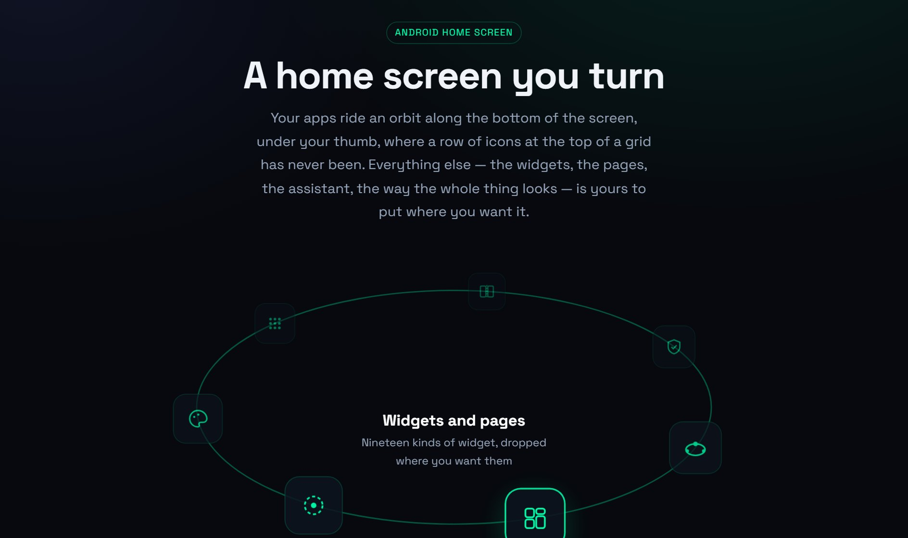

> ANDROID HOME SCREEN
Orbital Launcher
In testingA home screen built around a dock you turn with your thumb.
orbitallauncher.com
> ABOUT
Android home-screen replacement built around a dock you turn with your thumb. Apps ride an ellipse along the bottom of the screen rather than a grid at the top, with pages, widgets and an assistant bar placed wherever you want them. Nothing phones home: no account, no server, no analytics, no crash reporter. Free on Google Play, with Orbital Premium as an optional upgrade, and in testing now.
> ARCHITECTURE & PRODUCT DECISIONS
- The orbit dock: One orbit or three, anchored to the bottom or either side, or a plain flat row for anyone the wheel is not for. It can turn slowly by itself, wind back to where it started, and stay within reach from inside other apps.
- Nineteen widgets: Clock, calendar, week, up next, weather, now playing, news, feeds, people, notes, battery, torch, calculator, folders, app shortcuts and an app scroller, alongside any Android widget already installed.
- Assistant bar: Type an errand and it carries it out, covering reminders, notes, messages, emails, calls, calendar entries, app launches and searches. A Claude, ChatGPT or Gemini key is optional and used only for phrasing it cannot parse itself.
- Built for foldables: The open screen can share the folded one's layout, spread two pages side by side, or keep a layout of its own with its own theme, dock and settings.
- Permissions on demand: Nothing is requested at install. Each feature asks the first time it is used, and whatever is declined simply goes quiet rather than blocking the app.
- No telemetry at all: No account, no sign-in, no server of its own, no analytics library, no crash reporter, no ad network. The five kinds of request that can leave the phone are each listed with what they contain.